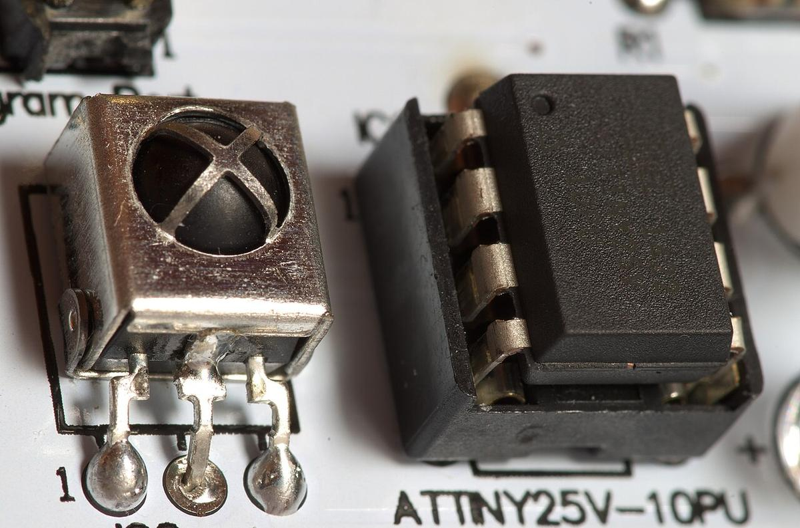

01 / FUNDAMENTOS
¿Qué es IoT?
La definición exacta, la diferencia entre IoT, IIoT e IoE, y qué son un sensor y un actuador.
Estudiar los conceptos →PARCIAL 2 · TEMA 8 · PROGRAMACIÓN PARA IOT
Sensores que miden, microcontroladores que deciden y redes que lo transmiten todo. A recorrer el Internet de las Cosas: de la placa electrónica hasta la nube.

ELIGE POR DÓNDE EMPEZAR
La definición exacta, la diferencia entre IoT, IIoT e IoE, y qué son un sensor y un actuador.
Estudiar los conceptos →
Las cuatro capas, los protocolos MQTT, CoAP y HTTP, y Arduino vs ESP32 vs Raspberry Pi.
Abrir el diagrama →
Semáforos que se adaptan al tráfico, hogares que escuchan, cultivos que riegan solos y salud vigilada.
Ver los casos →DISEÑADO CON CRITERIO
Reglas de usabilidad de Jakob Nielsen y de Shneiderman, traducidas a decisiones concretas de esta página.
El enlace de la página actual se resalta con .activo y aria-current; los botones cambian al pasar el cursor.
El formulario valida antes de enviar y explica exactamente qué corregir, sin mensajes genéricos.
Cada acción del simulador responde al instante con un mensaje, un color y un registro visible.
El encabezado, el menú y el pie son idénticos en las cinco páginas; nada cambia de lugar sin motivo.
El menú se abre y se cierra a voluntad, y el simulador avanza solo cuando el usuario lo pide.
Contraste alto, enlace “Saltar al contenido”, foco visible y etiquetas aria en los controles.